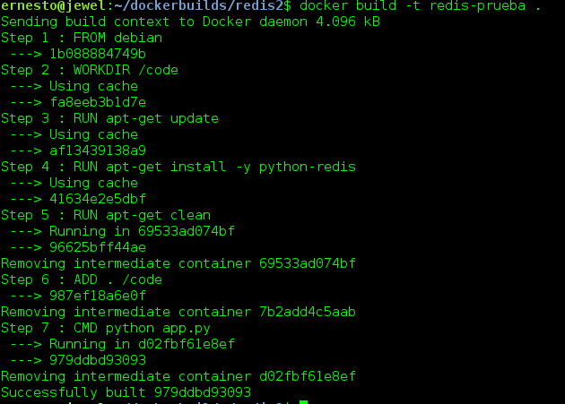

Introducción de Redis con Python
Publicado el sáb 16 julio 2016 en Tutorial Python • 2 min de lectura
En dos artículos sobre Docker se tocaron el tema de redis, el primero fue usando flask y el segundo, el último artículo que habla de crear una imagen Docker para Redis.
A continuación se usará un contenedor Docker con una aplicación Python que se conecta a redis.
La estructura de directorios de la aplicación es la siguiente:
redis2
├── app.py
└── Dockerfile
El archivo Dockerfile contiene lo siguiente:
#Imagen base de debian
FROM debian
#Directorio de trabajo /code
WORKDIR /code
#Actualización de la lista de paquetes
RUN apt-get update
#Se instala el módulo redis para python
RUN apt-get install -y python-redis
#Se limpia la cache de paquetes deb
RUN apt-get clean
#Se agrega el código en el directorio de trabajo
ADD . /code
#Se ejecuta el script
CMD python app.py
El código de la aplicación es el siguiente:
#!/usr/bin/env python
#Se importa redis
import redis
#Se crea la instancia de conexion al contenedor redis
cliente = redis.StrictRedis(host='redis', port=6379)
#Se asigna un mensaje a la variable saludo
cliente.set("string:saludo", "Hola mundo!")
#Se muestra el valor de la variable saludo
print (cliente.get("string:saludo"))
#Se crea una variable contador y se incrementa su valor
cliente.incr("string:contador")
#Se muestra el valor de la variable saludo y contador
print (cliente.mget(["string:saludo", "string:contador"]))
#Se crea una lista con 2 items
cliente.rpush("list:lista", "v1", "v2")
#Se extrae el valor de la lista por medio de pop
print (cliente.lpop("list:lista"))
#Se asigna el titulo a una pagina
cliente.hset("set:pagina", "titulo", "Blog de seraph")
#Se muestra todos los valores de pagina
print (cliente.hgetall("set:pagina"))
#SE agrega dos nombres a la variable usuario
cliente.sadd("set:usuarios", "ernesto", "nadir")
#Se muestra los usuarios
print (cliente.smembers("set:usuarios"))
#Se agrega unos valores a la variable programadores
cliente.zadd("sorted_set:programadores", 1969, "Linus Torvalds")
cliente.zadd("sorted_set:programadores", 1986, "Aaron Swartz")
#Se muestra el contenido de dicha variable
print (cliente.zrange("sorted_set:programadores", 0, -1, withscores=True))
Se construye la imagen para probar el código.
docker build -t redis-prueba .
A continuación una imagen de la ejecución y su resultado:

Ahora se ejecuta el contenedor enlazandolo con la ejecución de redis del artículo anterior:
docker run --link redis:db -i -t redis-prueba
Hola mundo!
['Hola mundo!', '9']
item1
{'titulo': 'Blog de seraph'}
set(['nadir', 'ernesto'])
[('Alan Turing', 1912.0), ('Alan Kay', 1940.0), ('Linus Torvalds', 1969.0), ('Aaron Swartz', 1986.0)]
¡Haz tu donativo! Si te gustó el artículo puedes realizar un donativo con Bitcoin (BTC) usando la billetera digital de tu preferencia a la siguiente dirección: 17MtNybhdkA9GV3UNS6BTwPcuhjXoPrSzV
O Escaneando el código QR desde la billetera: